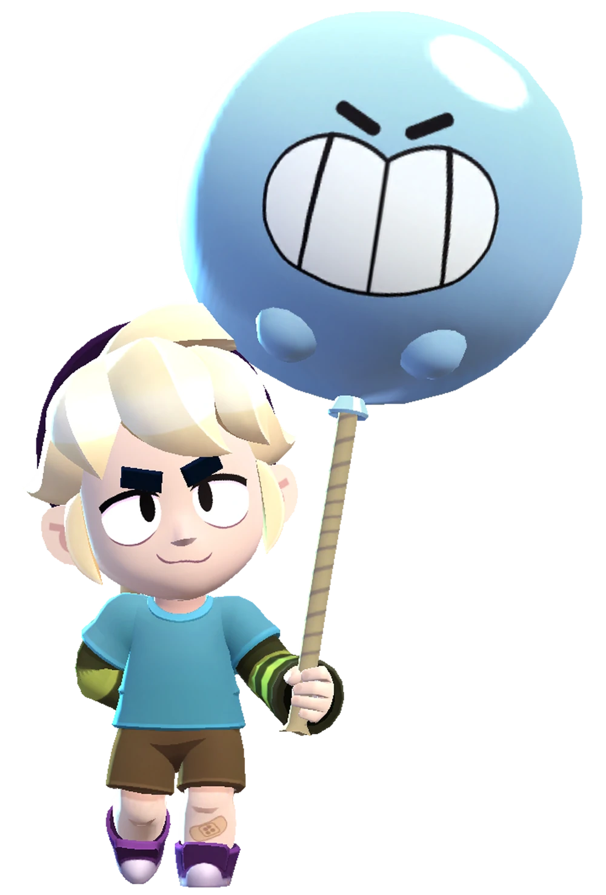

¿Quién es Gus?
Gus no es un niño fantasma, aunque lo confunden a menudo con uno. Simplemente da la casualidad de que siente fascinación por lo sobrenatural y los lugares encantados
Gus es un Brawler Superespecial que tiene una salud y un daño moderado, pero tiene capacidades de curación únicas. Ataca disparando un globo a los enemigos. Gus carga una barra al golpear a los Brawlers enemigos, y al cargarla, su próximo ataque genera un espíritu que lo cura a él o a los aliados que lo recogen. Su súper le otorga a él o a un compañero de equipo un escudo que absorbe el daño y se debilita con el tiempo, empujando a todos los enemigos cercanos hacia atrás.
|  |
NIVEL DE FUERZA 11 |
Sus gadgets
EXPLOSIÓN ESPIRITUAL: Todos los espíritus que no han sido recolectados explotan e infligen 2000 puntos de daño a los enemigos cercanos. |
CAMBIO DE ALMA: Gus pierde un 5% de salud y gana un 100% de espíritu al instante. |
Sus habilidades estelares
 |
SALUD ABUNDANTE: La salud recuperada gracias a los espíritus aumenta en un 100%. |
 |
GUÍA ESPIRITUAL: Tenebrosa aumenta el daño que inflige un aliado en un 25% durante 5 segundos. |
 Braian Arancibia
Braian Arancibia Aya El Baarar
Aya El Baarar